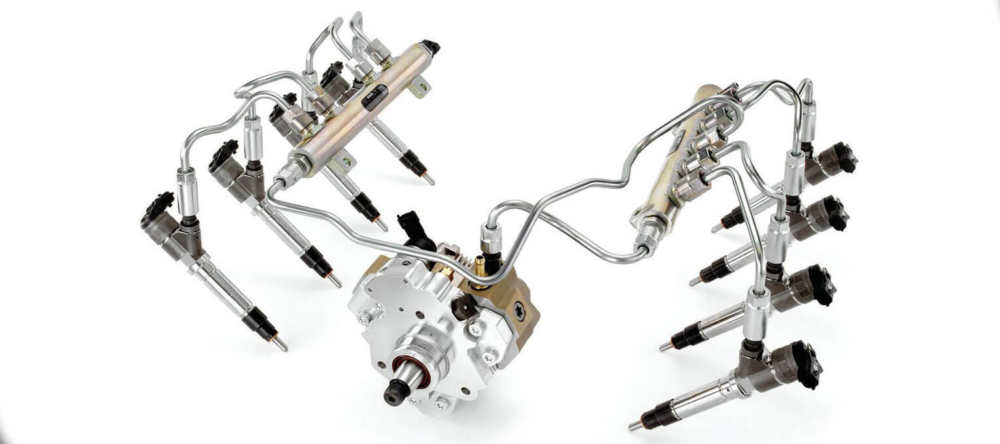
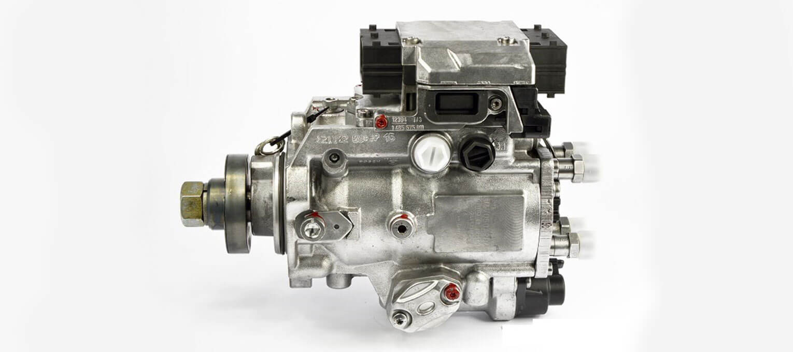
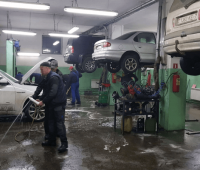
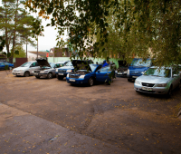
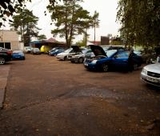
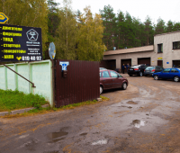
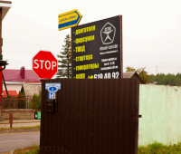

Дизельный двигатель
Компьютерная диагностика, поиск причин плохого запуска, дыма, потери тяги и ошибок по топливной системе.
+375 29 619-40-92Минск, ул. Липковская, 6
Диагностика, ремонт дизельных двигателей, форсунок Common Rail и ТНВД в одном специализированном СТО.
Услуги
Выберите направление ремонта и свяжитесь с мастером, который отвечает за диагностику, двигатель, форсунки или ТНВД.
Компьютерная диагностика, поиск причин плохого запуска, дыма, потери тяги и ошибок по топливной системе.
+375 29 619-40-92Ремонт механики двигателя, согласование работ до начала ремонта и контроль результата после сборки.
Юрий: +375 29 655-22-86 Константин: +375 29 115-13-63Проверка, ремонт и восстановление дизельных форсунок Bosch и систем Common Rail.
+375 29 619-40-92Диагностика и ремонт ТНВД, проверка подачи топлива и стабильности работы дизельной системы.
+375 29 619-40-92Отдельная проверка форсунок перед ремонтом двигателя или после появления симптомов по запуску и расходу.
+375 29 619-40-92Оставьте марку, модель и симптомы. Мастер подскажет, с какой диагностики начать и к кому записаться.
Запросить расчетПроцесс
Сначала фиксируем симптомы и проверяем автомобиль, затем согласуем объем работ и проверяем результат после ремонта.
Быстрая заявка
После отправки откроется подготовленное письмо на адрес СТО, чтобы вы могли проверить данные перед отправкой.
СТО
Рабочая зона, оборудование и отдельные направления по дизельным системам собраны в одном месте.







Марки
Отзывы
Клиенты оценивают качество диагностики, понятное общение с мастерами и результат после ремонта.
Клиент отмечает квалифицированную работу по EGR и форсунке, а также понятное общение мастеров.
Александр, июнь 2022Перед ремонтом можно уточнить симптомы, марку автомобиля и удобное время приезда на диагностику.
Запись по телефонуКонтакты
СТО находится в Минске на улице Липковской, 6. Рабочее время: с понедельника по пятницу, 9:00-18:00.